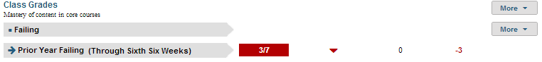

Dashboard Metrics


Class Grades
Background
Student Dashboard Metrics
Because of the need to closely monitor course performance, many school districts across the nation, including Chicago, Dallas and New York, have incorporated metrics on course performance and associated credit accumulation into their internal performance management dashboards. In addition, during focus groups conducted with educators, the Class Grades metrics, as presented in screen shots of the student dashboard, were considered useful by 96% of those surveyed.
Primary Metrics
- Class Grades – Failing: the number of courses with failing grades out of total courses taken at the end of each grading period, with a trend comparison to the student’s course failures as of the prior grading period.
- Class Grades – # of Course Grades Dropping 10% or More: the number of courses out of total taken for which the student’s most recent course grade is dropping 10% or more from the prior grading period, with a trend comparison to the student’s course declines as of the prior grading period.
- Number of Courses Repeating: the number of courses a student is repeating due to failure.
Related Metrics
- Class Grades Below C Level: the number of courses for which the student’s most recent course grade is below C (70%), with trend comparison to the student’s courses below C for the grading period prior to the most recent.
- Credit Accumulation: cumulative number of credits earned as of the prior grading period compared to minimum credits required at mid-year and at the end of each year under the default state graduation plan.
- On Track to Graduate: whether or not a student is on track to meet the 4x4 graduation requirement of earning one credit per year in each of the four core subjects.
- High School Graduation Plan: reports the student’s intended graduation plan and whether or not the student is below, at or above meeting credit requirements in all eligible courses for their intended plan.
User Interface
Dashboard Example
Figure 1 shows the Class Grades metric as seen on the student dashboard.

Figure 1 Ed-Fi Class Grades Metric
Status Definition
The Status indicator is determined by campus-specific thresholds (campus goals) which are set at the district level. The Ed-Fi dashboards default thresholds are
- Number failing = greater than 0
- Number of course grades dropping 10% or more = 10%
- Number of courses repeating = greater than 0
The denominator for this metric is the number of courses that the student is enrolled in for the current grading period.
Table 2 lists the Status indicators and trend comparisons for the Class Grades metric as seen on the student dashboard.
Metric Indicator | Trend Comparisons | |||
Metric Name | Sub-metric Name | Metric Status Indicator | Compares: | To: |
Course Grades | Number Failing | Red (Yes) = If student is failing any course grades Green (No) = If student is not failing any courses | Current grading period | Prior grading period |
Number of course grades dropping 10% or more | Red (Yes) = If course grade is dropping at or more than the percentage points of the campus goal Green (No) = If course grade is not dropping at or above campus goal | Current grading period | Prior grading period | |
Number of courses repeating | Red (Yes) = If student is repeating any courses due to failure Green (On Track) = If student is not repeating any courses due to failure | Current grading period | Prior grading period | |
Trend Definition
In the full Ed-Fi dashboards implementation, if the first grading period is not complete, the Ed-Fi dashboards display prior year and final grades for each subject. Once the first grading period is complete, the trend shows the difference between first grading period and final year grade from the prior year.
Table 3 lists the Trend Indicators. Trends are not implemented for Release 2; this table is for documentation purposes.
Trend Indicators: Objective is to indicate Course Grades | |||
| Up green | An increase in the number of failing grades, falling grades or courses repeated | |
| Unchanged | No change in the number of failing grades, falling grades or courses repeated from the prior grading period | |
| Down red | If there is a decrease in the number of failing grades, falling grades or courses repeated from the prior grading period | |
The trend does not show for the first grading period since data is not available for two or more grading periods.
Periodicity
The data is most actionable when loaded at the end of each grading period after grades are posted. Grading periods vary by state and district.
Recommended Load Characteristics | |
Calendar | Throughout the school year |
Frequency of data load | Grading Period |
Latency | Grading Period |
Interchange schema | Interchange-StudentGrade.xsd |
Tooltips
The standard tool tips for the Class Grades metric definition, column headers, and help functions display for this metric.
The following are tooltips specific to the Class Grades metric:
 is ‘No change from the prior period'
is ‘No change from the prior period' is ‘Getting worse from the prior period’
is ‘Getting worse from the prior period’ is 'Getting better from the prior period'
is 'Getting better from the prior period'
Business Rules
The Class Grade metric displays how well a student is doing in their courses during the current school year. The Class Grades metric summarizes grades for a student in three ways.
The Value column displays (in fractional format) the number of courses failing, falling, or repeating out of the number of courses the student is taking in the current grading period.
The nominator is one of the following:
- Number of class courses failing—The “failing” grade is a configurable variable with the default value set to less than 70 for numeric grading systems, or equal to D or F for letter grading systems.
- Number course grades falling 10% or more—
- For numeric grading systems, this means “dropping 10 percentage points or more.” For example, a student’s course grade is 85 in the previous grading period, the course is counted as dropping when it drops to 75 or less with current grades of 70 or less
- For letter grading systems, this means dropping one letter grade or more.
- Number of courses repeating— the Ed-Fi dashboards count the number of core courses that a student is repeated due to failure
The denominator is the total number of courses a student is enrolled in for the current grading period.
The grading period is configurable and is defined by the district – typically either 6 or 9 weeks. The failing grades metric also takes the final grade into account once it has been posted. The trend however will always reflect the comparison from the last two grading periods as the final grade is generally an average of the year or semester.
Data Assumptions
- Student grade information is available for multiple grading periods for the current year. If the grade information is unavailable, no information displays.
- Student grade information is available through the grade.
- Grades for each student are based on the latest grading period.
- Course grades are numeric or letter-based.
- District sets the value that drives the student thresholds (numeric and/or letter grade).
- The number of courses repeated is based on course transcript history for grades 6 through 12 (middle school and high school).
Computed Values
Table 5 defines how values are calculated. The result of the calculation displays in the Value column on the student dashboard. The result is show in fractional form. For example, 3/7 means the student is failing three out of seven classes and 1/6 means the student's grades are falling below the campus goal in one out of six classes.
Metric Values | |
# Failing | Number of courses failing / Total number of courses enrolled in |
# of course grades dropping 10% or more | Number of courses grades that are less than previous grading period by 10% or more / (Total number of courses the student is enrolled in for the grading period |
# of courses repeating | Number of core courses being repeated due to failure |
Data Anomalies
Anomalies
Best practice is to use footnotes to address these anomalies:
- Loading of data from each grading period
- Late enrollees may not have previous grading period grades from another school
- Missing transcripts for transfer students.
- When a student switches in to a different section of the same course, there is occasionally still a grade reported for the previous course section. there is no way to distinguish between the two or determine which is the appropriate section to report (because the dashboards do not read the date the student switched or which one the student was in most recently). The filter is currently set to report the higher grade.
Footnotes
Footnotes are used to provide addition data information concerning the metric. Footnotes are sequential for the entire page. Therefore, a metric's footnote may not begin with the number 1.
The following footnotes appear below the metric:
- Late enrollee students that have not been present for a full grading period should be noted by a designated icon
- Missing transcripts for transfer students
Date of Refresh
Best practice is for the date of last data refresh to appear next the metric in the following format:
- (Through Second Six Weeks) - (failing and dropping grades)
- (Through Spring Semester) - (# of courses repeating)
Implementation Considerations
Student Identity
Maintaining a correct and consistent student identity is at the center of any education data system. Most systems use some sort of unique identifier. However, sometimes this identifier is entered incorrectly or sometimes different systems use different identifiers.
The UDM XML supports the interchange of multiple types of identifiers. The StudentReference is a complex type within the UDM to maintain the referential integrity of the student (that is, ensuring that the data associated with each student is accurately associated with the right student). The complex type of the student reference assists with implementing the accurate matching algorithm to identify a student by utilizing any of the individual attributes (e.g., Student Unique State ID, Student ID, Campus Local ID (with Campus ID), Name and Birth Date). For example, if the Student Unique State ID is unknown, you can find the student’s identity by their Student ID, First Name, Last Name and Birth Date.
Numeric or Letter Grading System
Best practice is for the metric to support both numeric and letter grading systems.
Late Enrollments
For late enrollment students, consider whether or not there is previous grading period data to compare to the latest grading period.
Frequency of Uploading Data
The metric computation implementation may vary depending on the periodicity of loading the data.
Current Grading Period
Data for the current grading period must exist for the Class Grades metric to exist. If the first grading period has not completed, the prior year grades must display.
Drill Downs
Description
The "More" option enables you to drill down to see additional information for this metric. The Student Academic Profile page provides current and historical course-level grades. Educators can more easily identify courses where a student is struggling.
Drill Down View
Table 6 lists the drill down view that is recommended for this metric.
| Historical | Student Academic Profile displaying the student’s course and grade history |
Business Rules
The Historical Graph allows the user to see historical data across multiple timeframes. As time passes, there are many bars to be displayed; therefore, the slider on the bottom allows the user to adjust the number of bars displayed as well as the time period shown. The timeframes for this metric were chosen based on educator feedback.